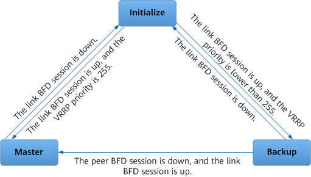
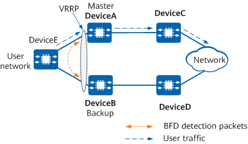

Understanding Association Between VRRP and BFD
Application Scenarios
After a VRRP group is configured, VRRP devices negotiate the master/backup state through VRRP Advertisement packets. If an interface or a link fails, or the network topology changes, devices in the VRRP group cannot immediately detect the failure or change. Consequently, the master/backup VRRP switchover is delayed. Additionally, after a master/backup VRRP switchover is complete, route switching fails to be performed because no route is associated with the VRRP group, interrupting the normal forwarding of traffic.
To resolve these problems, configure VRRP association. If an object associated with a VRRP group fails, the VRRP group is notified and performs a primary/secondary link switchover. In addition, when a master/backup VRRP switchover is performed, the VRRP group instructs its associated object to perform a switchover accordingly. VRRP association ensures proper traffic forwarding and improves link reliability.
BFD is used to rapidly detect faults in links or IP routes. BFD for VRRP enables a master/backup VRRP switchover to be completed within 1 second, thereby preventing traffic loss. A BFD session is established between the master and backup devices in a VRRP group and is bound to the VRRP group. BFD immediately detects communication faults in the VRRP group and instructs the VRRP group to perform a master/backup switchover, minimizing service interruptions.
Table 1 describes VRRP and BFD association modes.
Association Mode |
Application Scenario |
BFD Session Type |
Impact |
|---|---|---|---|
The backup device monitors the status of the master device in a VRRP group. The BFD session monitors the status of the link between the master and backup devices. |
Static BFD session with manually specified discriminators or with automatically negotiated discriminators |
The VRRP group adjusts the VRRP priority according to the BFD session status and determines whether to perform a master/backup VRRP switchover based on the adjusted priority. |
|
Association between a VRRP group and link and peer BFD sessions |
The master and backup devices monitor the link and peer BFD sessions simultaneously. A link BFD session is established between the master and backup devices; a peer BFD session is established between a downstream device and each VRRP device. BFD helps determine whether the fault occurs between the master device and downstream device or between the backup device and downstream device. |
Static BFD session with manually specified discriminators or with automatically negotiated discriminators |
If the link or peer BFD session status changes, BFD notifies the VRRP group of the change, and the VRRP group immediately performs a master/backup switchover. |
Association between a VRRP group and a VRID-based dynamic BFD session |
The backup device monitors the status of the master device in a VRRP group. The BFD session monitors the status of the link between the master and backup devices. |
VRID-based dynamic BFD session |
If the status of the VRID-based dynamic BFD session changes, BFD notifies the VRRP group, which immediately performs a master/backup switchover without changing the VRRP priority. |
Association Between a VRRP Group and a Common BFD Session
In Figure 1, a BFD session is established between DeviceA (master) and DeviceB (backup) and is bound to a VRRP group. If BFD detects a fault on the link between DeviceA and DeviceB, BFD notifies DeviceB to increase its VRRP priority so that it assumes the master role and forwards service traffic.
VRRP device configurations are as follows:
- DeviceA (master) works in delayed preemption mode and its VRRP priority is 120.
- DeviceB (backup) works in immediate preemption mode and its VRRP priority is 100.
- DeviceB in the VRRP group is configured to monitor a common BFD session. If BFD detects a fault and the BFD session goes down, DeviceB increases its VRRP priority by 40.
The implementation is as follows:
- Normally, DeviceA periodically sends VRRP Advertisement packets to notify DeviceB that it is working properly. DeviceB monitors the status of DeviceA and the BFD session.
- If BFD detects a fault, the BFD session goes down. DeviceB increases its VRRP priority to 140 (100 + 40 = 140), making it higher than DeviceA's VRRP priority. DeviceB then immediately preempts the master role and sends gratuitous ARP packets to allow DeviceE to update address entries.
The BFD session goes up after the fault is rectified. In this case:
DeviceB restores its VRRP priority to 100 (140 – 40 = 100). DeviceB remains in the Master state and continues to send VRRP Advertisement packets.
After receiving these packets, DeviceA checks that the VRRP priority carried in them is lower than the local VRRP priority and preempts the master role after the specified VRRP status recovery delay expires. DeviceA then sends VRRP Advertisement and gratuitous ARP packets.
After receiving a VRRP Advertisement packet that carries a priority higher than the local priority, DeviceB enters the Backup state.
- Both DeviceA and DeviceB are restored to their original statuses. As such, DeviceA forwards user-to-network traffic again.
The preceding process shows that association between VRRP and BFD differs from VRRP. Specifically, after a VRRP group is associated with a BFD session and a fault occurs, the backup device immediately preempts the master role by increasing its VRRP priority, and it does not wait for a period three times the interval at which VRRP Advertisement packets are sent. This means that a master/backup VRRP switchover can be performed in milliseconds.
Association Between a VRRP Group and Link and Peer BFD Sessions
In Figure 2, the master and backup devices monitor the status of link and peer BFD sessions. The BFD sessions help determine whether a link fault is a local or remote fault.
DeviceA and DeviceB run VRRP. A peer BFD session is established between DeviceA and DeviceB to detect link and device faults. A link BFD session is established between DeviceA and DeviceE and between DeviceB and DeviceE to detect link and device faults. After DeviceB detects that the peer BFD session goes down and the link BFD session between DeviceE and DeviceB goes up, DeviceB switches to the Master state and forwards user-to-network traffic.
VRRP device configurations are as follows:
- DeviceA and DeviceB run VRRP.
- A peer BFD session is established between DeviceA and DeviceB to detect link and device faults.
- Link 1 and link 2 BFD sessions are established between DeviceE and DeviceA and between DeviceE and DeviceB, respectively.
The implementation is as follows:
- Normally, DeviceA periodically sends VRRP Advertisement packets to inform DeviceB that it is working properly and monitors the BFD session status. DeviceB monitors the status of DeviceA and the BFD session.
- The BFD session goes down if BFD detects either of the following faults:
Link 1 or DeviceE fails. In this case, link 1 BFD session and the peer BFD session go down. Link 2 BFD session is up.
DeviceA's VRRP status switches to Initialize.
DeviceB's VRRP status switches to Master.
DeviceA fails. In this case, link 1 BFD session and the peer BFD session go down. Link 2 BFD session is up. DeviceB's VRRP status switches to Master.
- After the fault is rectified, all the BFD sessions go up. If DeviceA works in preemption mode, DeviceA and DeviceB are restored to their original VRRP statuses after VRRP negotiation is complete.

DeviceA's VRRP status is not impacted by a link 2 fault, and DeviceA continues to forward user-to-network traffic. However, DeviceB's VRRP status switches to Master if both the peer BFD session and link 2 BFD session go down, and DeviceB detects the peer BFD session down event before detecting the link 2 BFD session down event. After DeviceB detects the link 2 BFD session down event, DeviceB's VRRP status switches to Initialize.
Figure 3 shows the state machine for association between a VRRP group and link and peer BFD sessions.

The preceding process shows that after link BFD for VRRP and peer BFD for VRRP are configured, the backup device can immediately switch to the Master state if a fault occurs, without waiting for a period three times the interval at which VRRP Advertisement packets are sent or changing its VRRP priority. This means that a master/backup VRRP switchover can be performed in milliseconds.
Association Between a VRRP Group and a VRID-based Dynamic BFD Session
On the network shown in Figure 4, DeviceB (backup) monitors the status of DeviceA (master) through a VRID-based dynamic BFD session. If the VRID-based dynamic BFD session detects a fault in the link between the two devices, DeviceB switches to the Master state and takes over traffic forwarding.

VRRP device configurations are as follows:
- DeviceA and DeviceB run VRRP.
- A VRID-based dynamic BFD session is established between DeviceA and DeviceB to detect link and device faults.
- A VRRP group is configured on DeviceB to monitor the VRID-based dynamic BFD session. After the VRRP group detects a BFD session down event, DeviceB immediately switches to the Master state.
The implementation is as follows:
- Normally, DeviceA periodically sends VRRP Advertisement packets to inform DeviceB that it is working properly. DeviceB monitors the status of DeviceA and the VRID-based dynamic BFD session.
- If BFD detects a fault, the VRID-based dynamic BFD session goes down. After receiving the BFD session down event, DeviceB immediately switches to the Master state and sends gratuitous ARP packets to allow DeviceE to update address entries.
After the fault is rectified, the VRID-based dynamic BFD session goes up. If DeviceA works in preemption mode, DeviceA and DeviceB are restored to their original VRRP statuses after VRRP negotiation is complete. As such, DeviceA forwards user-to-network traffic again.
Compared with association between VRRP and a common BFD session, association between VRRP and a VRID-based dynamic BFD session enables a faster master/backup VRRP switchover to be performed. Specifically, after receiving a BFD session down event, the backup device immediately switches to the Master state without changing its VRRP priority, speeding up the master/backup VRRP switchover process.